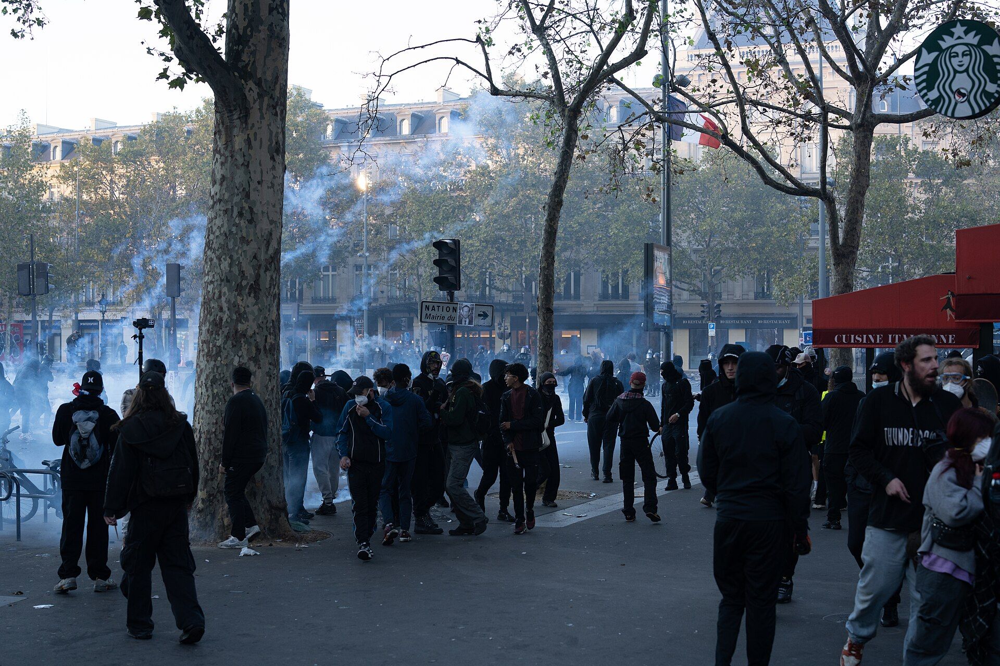
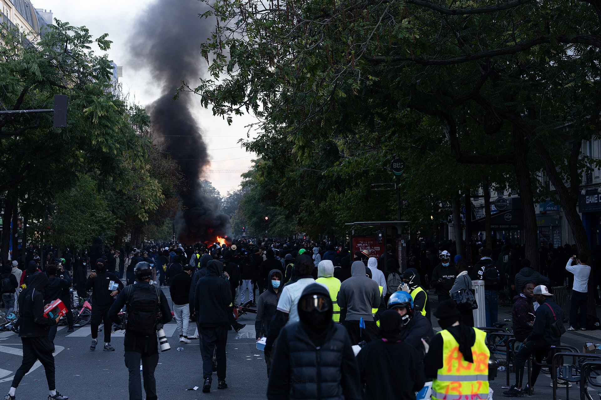

On the weekend of 17 October, France had its worst street violence in years. Interior Ministry figures put the crowds at about 550,000 nationwide, 110,000 of them in Paris. By the ministry's count, 2,397 people were arrested and 997 police and gendarmes were injured, seven seriously. By Monday the justice minister reported 2,513 people taken into police custody and 67 already jailed, with cases reclassified as organised crime so detention could run to 72 hours instead of 48.

Curfews followed. From Monday night, Lille, Douai, Denain and Wattignies were under curfew from 20:00 to 06:00. Parts of Paris ran 23:00 to 06:00 with demonstrations banned from 20:00. Marseille banned public gatherings from noon to 20:00. At least 3,000 shops were damaged, with losses running into hundreds of millions of euros. Germany updated its travel advice for France; China's state broadcaster warned citizens travelling there. Organisers have called another round for this Saturday.
If you are applying for 2027 entry, none of that is your problem in the way it looks. Almost no international student was anywhere near it, and it would be dishonest to read two days of city-centre violence as proof that European universities are unsafe.
Your problem is different, and quieter. Three of the assumptions you are building a three-year plan on just moved, and none of them have anything to do with getting hurt.
We covered the safety side of this separately — perception indices, homicide data, and the four risks that are actually real for an international student in China. The short version is that violent crime is the wrong variable to optimise for, in Europe or anywhere else.
The variable that matters is whether the systems around you keep running on the day you need them — and what it costs you when they do not.
A curfew closes the library at the hour you planned to use it. A transport shutdown cancels an exam you booked a month earlier. A town hall that burned is a building where residence permits and address registrations do not get processed that week. When students protest education funding, the disruption lands inside universities rather than outside them.
For a citizen, that is an inconvenience absorbed across a lifetime. For an international student on a twelve-month visa, with a registration deadline printed on an admission letter, a three-week processing gap can end a semester. That asymmetry, not the arrest count, is what a 2027 applicant needs to price.

Eurostat put euro-area energy prices 18.8 percent higher year on year in September, with headline inflation at 3.8 percent. Energy passes through into rent, heating and campus services before it ever shows up in a tuition line — and tuition in most of continental Europe is set politically, which means it moves in jumps rather than gradually.
The second-order effect is the currency. A euro that swings on political risk turns a three-year budget into a three-year position. Students who budgeted at 1.08 and are paying at 1.17 have already absorbed a cost increase no university ever quoted them.
France votes in April and May. The budget is under strain. The parliament has to respond to street pressure, and this round started in classrooms over unfilled teaching posts — a school-level dispute that became a national one in under a month.
That combination points one way: policy that can change faster than a degree programme can. Visa rules, tuition bands, residence-permit processing times and post-study work rights were all adjusted somewhere in Europe in the last four years. Ask what happened in your destination country over four years, not four months.
This round began with students and ended with curfews, and the teaching weeks lost in between are rarely refunded. For a taught master's, the classroom is the product. You are not buying a credential and a city separately; you are buying a fixed number of contact hours plus access to facilities.
| What moved | What it changes for you | How to price it |
|---|---|---|
| Energy +18.8% year on year | Rent, heating and campus services first; tuition later | Add a 10% currency buffer to the total |
| An election in April and May | Tuition and visa rules can change inside your degree | Check four years of policy, not four months |
| Curfews and lost teaching weeks | A taught master's buys contact hours | Ask in writing for the strike and curfew plan |
Set against that, what a 2027 applicant gets from applying to China is not a better story. It is a shorter list of variables.
The calendar is fixed. The CSC scholarship portal opens on 1 November and closes on a published date, year after year. You can plan backwards from it. That is the single thing you cannot do with a tuition policy that depends on who wins an election. Our nine-document checklist for CSC 2027 is built around that calendar.
The cost structure is legible. Tuition and living costs for English-taught programmes are published per university and move slowly. There is no energy index passed through into your dormitory bill, and the currency you are exposed to is the renminbi, which is managed rather than freely floating.
Administrative machinery does not stop. Registration, residence permits and campus services run through a system that is not subject to coalition collapse. That is a structural feature, not a cultural one, and it comes with its own trade-offs — a privacy debate being the obvious one — which each student should weigh honestly rather than have decided for them.
But a shorter list cuts both ways, and this is the part agencies leave out. The range of English-taught programmes is narrower than in Germany or the Netherlands. Post-study work rights are more limited than in Canada. And a Chinese degree is not automatically recognised everywhere — you have to check the receiving country's recognition list before you apply, not after.
Stop comparing countries on safety. Compare them on three things you can actually measure.
If you were already leaning toward Europe for 2027, do not cancel anything because of one weekend. Do three things before you commit money.
Unrest is expensive not because of the risk of getting hurt, but because of the uncertainty it prices into every plan you make. The correct response is not to pick the safest-looking country. It is to pick the plan whose assumptions you can verify.
Two days of rioting in France did not change what a Chinese degree is worth. It changed how much you should charge for uncertainty when you compare it against one.
---
Image credits: both photographs were taken by Jorge Jaramillo in Paris on 17 October 2026 and are used via Wikimedia Commons under CC BY-SA 4.0. Original files and licence terms: commons.wikimedia.org.
About ORIGIN
ORIGIN (NANJING) Education Technology Co., Ltd. works with international students applying to Chinese universities — university shortlisting, document review, CSC scholarship applications, and visa support. Learn more at www.originedu.net.
Talk to us on WhatsApp: +852 4702 6670 · +86 139 1391 7777